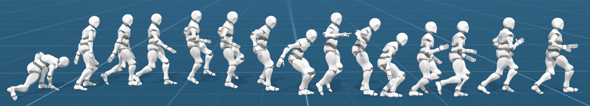

(1) School of Computer Science, Peking University (2) Key Laboratory of Machine Perception(MOE), Peking University (3) School of Intelligence Science and Technology, Peking University

Abstract
In this paper, we introduce ControlVAE, a novel model-based framework for learning generative motion control
policies based on variational autoencoders (VAE). Our framework can learn a rich and flexible latent
representation of skills and a skill-conditioned generative control policy from a diverse set of unorganized
motion sequences, which enables the generation of realistic human behaviors by sampling in the latent space
and allows high-level control policies to reuse the learned skills to accomplish a variety of downstream
tasks. In the training of ControlVAE, we employ a learnable world model to realize direct supervision of the
latent space and the control policy. This world model effectively captures the unknown dynamics of the
simulation system, enabling efficient model-based learning of high-level downstream tasks. We also learn a
state-conditional prior distribution in the VAE-based generative control policy, which generates a skill
embedding that outperforms the non-conditional priors in downstream tasks. We demonstrate the effectiveness
of ControlVAE using a diverse set of tasks, which allows realistic and interactive control of the simulated
characters.